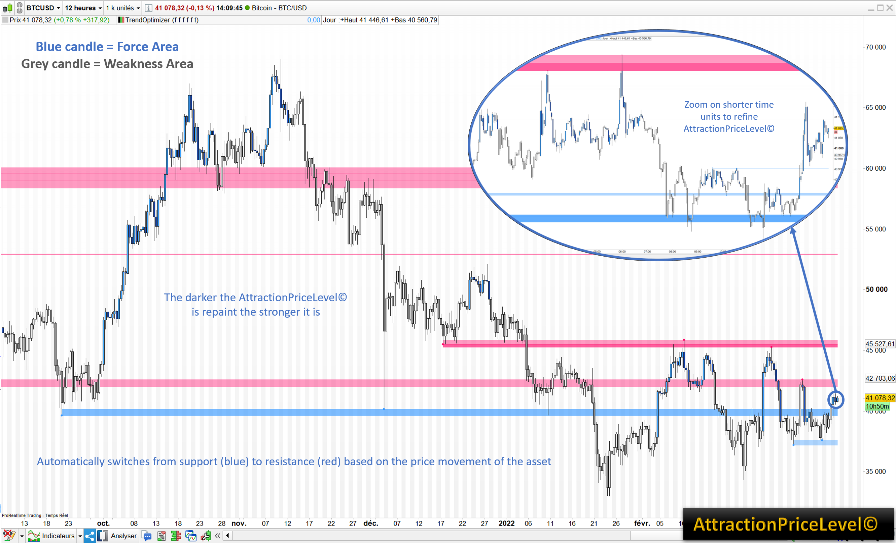
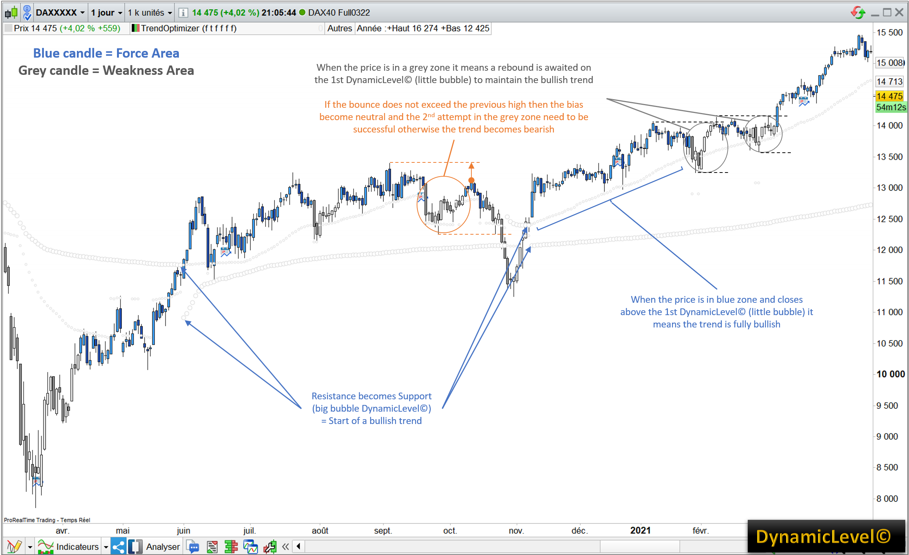
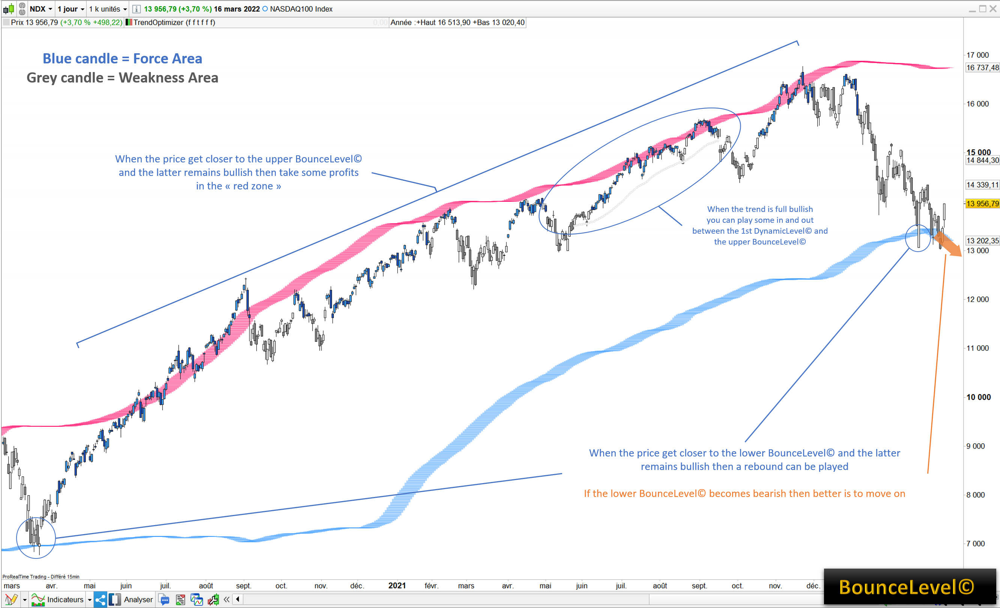
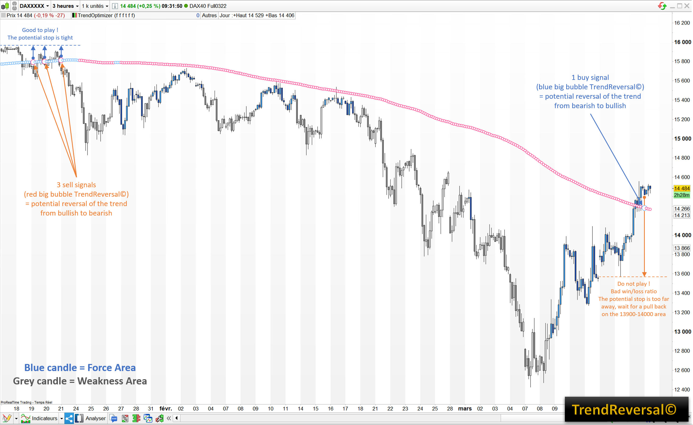
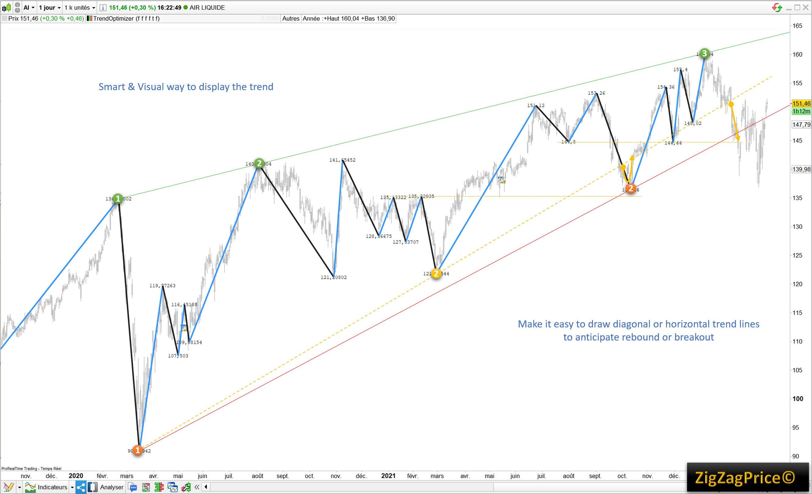

Qu’est-ce que c’est ?
Set d’indicateurs tout en un, efficace sur toutes les unités de temps & avec toute sorte d’actifs (actions, crypto, forex, futures).
A quoi ça sert ?
- Accompagner la tendance qu’elle soit haussière ou baissière
- Estimer le bon timing & évaluer les bons niveaux de prix
- Identifier les zones potentielles d’essoufflement, de rebond ou de renversement de tendance
Que vais-je trouver à l’intérieur ?
5 indicateurs indépendants et complémentaires + coloration des bougies en fonction de leur zone de force/faiblesse + mode jour/nuit + variables pour screeners.
Coloration des bougies
Bougies bleues = zone de force | Bougies grises = zone de faiblesse.
DynamicLevel©
Niveaux dynamiques sous forme de bulles, adaptatifs à la volatilité et aux volumes.
BounceLevel©
Enveloppe réactive aux pics de volatilité, utile pour profits et rebonds.
TrendReversal©
Support/Résistance dynamique signalant les renversements potentiels.
ZigZagPrice©
Affiche les prix en zigzag pour une visualisation instantanée de la théorie de Dow.
